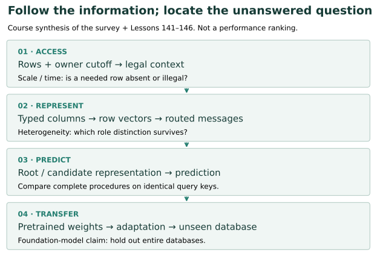
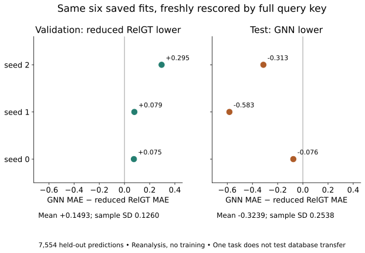
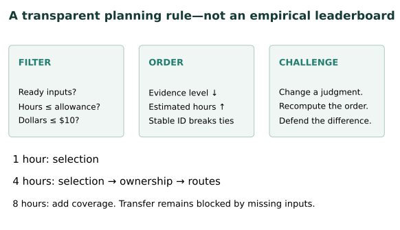

Year 4 · Quarter 3 · Lesson 147
Next-generation architectures: turn gaps into experiments
One win · turn an architecture claim into a testable research question
Previous: defend a comparison · Reference · Student notebook · Executed solution
1 · From a model catalogue to a research question¶
Your mission is to make a defensible case for relational learning. A list of promising architectures is not yet evidence. In Lessons 141–145 you traced how different models move information. Lesson 146 compared two reduced designs on one task. Now ask what that comparison leaves unresolved, and which next investigation could actually resolve it.
The reading. Dwivedi et al., Relational Deep Learning: Challenges, Foundations and Next-Generation Architectures, v1 organizes RDL around scale, temporal dynamics and heterogeneity. It connects relational entity graphs to established graph methods and discusses unified architectures and foundation models as research directions (§§2–5). Read §2.4, §4.1 and §5 first. This is a June 2025 source snapshot, not a claim to catalogue September 2026's frontier.
A relational entity graph (REG) has a node for each database row and edges for foreign-key references. Heterogeneity means different tables, relations and column modalities need different treatment. A foundation model, in this lesson's operational test, reuses pretrained weights across tasks or databases. A flexible architecture retrained from scratch on each database does not alone meet that test.


The survey's model families suggest mechanisms: typed GNNs aggregate neighbors, RelGNN composes routes through facts, ContextGNN combines local and candidate-wide ranking, and RelGT mixes token encodings with local/global attention. Its transfer agenda requires evaluation beyond fitting a single database. See §3, §4.1, and §5.2.
Scope check. The map below is our course synthesis. A mechanism addressing a problem does not prove that the problem is solved. This lesson introduces no new model and claims no survey-wide experimental reproduction.
2 · Follow the information, then name the gap¶
In plain terms. Ask where the required information could be lost before asking which model is most powerful.
Start with a query (driver=7, cutoff=20). A sampler chooses legal rows for that particular query. A row encoder converts their columns into vectors. A propagation operator mixes information across the selected rows. A prediction head reads the root representation. Finally, a held-out evaluation tests the chosen training procedure. Each boundary creates a different research question.
Choose the benchmark contract. A task leaderboard compares procedures under particular splits and metrics. A foundation-model study additionally needs to identify which databases were excluded from pretraining. A row split cannot answer both questions. For the survey's benchmark inventory, read §2.3; our executable evidence here is limited to the RelBench F1 task.
Information access comes first. If a useful row is absent, changing attention heads cannot expose its attributes. If a future row is present, encoding its age cannot establish permission to use it. These are logical properties of the input contract, not empirical accuracy claims. L145's source audit is a concrete case: ownership was lost in a cache keyed only by entity.
Representation comes next. A shared sum may merge distinct role assignments. A route-specific update can be tested against that collision, but only a target depending on the lost distinction makes the collision harmful. Recall Lesson 142: the target rule is part of the argument.
Transfer asks a different question. Training three seeds on F1 measures sensitivity to those runs under that task's protocol. It never changes the database. To test transfer, declare which databases are absent from pretraining, what adaptation data is allowed, and which scratch-trained baseline gets the same adaptation budget. That is an experimental proposal; this lesson does not execute it.
Predict, then intervene. The baseline is four hours and $10 per candidate investigation. Reduce the time allowance to one hour; which questions remain feasible? Increase it to eight. Does the foundation-model question become ready? Why would more time alone fail to provide an uncontaminated pretraining corpus?
3 · Reproduce the evidence you actually have¶
Held fixed: the six saved L146 fits, their selected checkpoints and all held-out queries. Varied: only the order of prediction rows during the new audit. Measured: mean absolute error (MAE), the average distance between a prediction and its recorded target. The row shuffle must leave the score unchanged.
Worked example. Reference keys (7,10) and (7,20) have targets 1 and 5. Predictions arrive in reverse order: 5 and 3. Matching keys gives absolute errors 2 and 0, hence MAE 1. Matching positions gives 4 and 2, hence MAE 3. The same entity is insufficient identity because its cutoff changed.
The live notebook function rejects missing, extra and duplicate keys. It checks recorded targets against saved prepared targets before scoring. The new audit reuses those targets; it does not independently reconstruct labels from the raw database again.


| Seed | GNN validation | RelGT validation | GNN test | RelGT test |
|---|---|---|---|---|
| 0 | 3.222580 | 3.147865 | 4.261014 | 4.336655 |
| 1 | 3.132941 | 3.054402 | 4.335083 | 4.917953 |
| 2 | 3.237436 | 2.942668 | 4.284798 | 4.597999 |
Fresh reanalysis of 7,554 reused L146 predictions. Paired validation difference +0.149340 ± 0.125959; test −0.323904 ± 0.253784 MAE (mean ± sample seed SD). No fresh training.
For each seed, define paired difference = GNN MAE − reduced RelGT MAE. Positive values favor reduced RelGT; negative values favor the GNN. Calculate each seed difference first, then report their mean and sample standard deviation, a measure of spread across these three seeds. This is not a confidence interval or a population-wide probability of superiority.
What follows? The conditional ordering reverses between the two splits. That motivates checking selection stability, context coverage or error slices. It does not isolate attention as the cause: the arms differ in several mechanisms. Reusing this familiar test set for new hypotheses makes the next analyses exploratory. Confirmatory claims need a protocol and evaluation population not chosen after inspecting these errors.
4 · Rank questions without manufacturing certainty¶
A falsifier is an observable result that would refute the specific claim you propose. “Try a bigger transformer” lacks one. “The missing circuit rows explain the error gap” can be challenged by measuring whether those rows are already present.
Our map records a mechanism, unresolved gap, minimal test, held-fixed variables and falsifier for each question. It also records planning assumptions. Hours estimate investigation effort, not measured runtime. Dollars describe the proposed local investigation, not training a new model. Ready means the required inputs and protocol are available for that investigation.
Evidence levels are a declared course rubric: 3 = a local empirical audit directly motivates the question; 2 = a controlled mechanism example; 1 = an architectural argument; 0 = an untested transfer proposal. They describe the basis for asking, not the likelihood that a new method will succeed.
Our deliberately simple policy filters by readiness, hours and dollars; sorts remaining questions by evidence level descending, effort ascending, then stable ID. It does not add ordinal evidence levels to dollars. Each candidate is considered separately: the result is not a portfolio whose total effort fits the limit.


Worked example. At four hours, the ranking is selection → ownership → routes. Coverage needs an estimated six hours. Transfer is not ready even with forty hours because a corpus and held-out-database protocol are missing. The forty-hour/$10 entry is an illustrative placeholder, not a priced foundation-model training plan. Your job is to challenge these judgments before treating the ordering as advice.
A ranked shortlist is not a four-hour schedule. Use the actual estimates in the question ledger:
| Question | Own hours | Cumulative hours |
|---|---|---|
| Selection | 1 | 1 |
| Ownership | 2 | 3 |
| Routes | 3 | 6 |
Every individual question passes the four-hour filter, but doing all three requires six estimated hours. If the constraint instead means four hours total, selection + ownership fits in three hours, and selection + routes fits in four. Ownership + routes exceeds it. The ranking rule does not choose between those feasible bundles, account for shared setup time, or assign a numerical research value that could justify an optimal portfolio.
Try it after the example. Reserve one of the four hours for writing and verification. Which two-question bundles remain feasible under additive estimates? Check your reasoning
Only selection + ownership fits the remaining three hours. The reserve changes the schedule constraint; it does not strengthen the evidence behind either question.
Sensitivity exercise. Change ownership's evidence level from 3 to 1 in the notebook. Predict the new order before running. Then argue whether that edit reflects weaker evidence or merely your preference. The ranking cannot make that distinction for you.
5 · Lab: write the contracts, then defend one question¶
The portable student lab contains all audit inputs and diagrams. It needs NumPy, no GPU or repository checkout. Three TODOs implement the actual functions used in the full reanalysis: keyed losses, paired summaries and feasibility-first ranking. Each has immediate rejection checks. The executed solution is author-reference evidence, not evidence of your mastery.
EXIT deliverable: export your revised open-problems map and write 150–250 words choosing one investigation. Include the hypothesis, minimum test, fixed quantities, falsifier, cost assumptions and one claim the current evidence cannot support. Explain how your proposal connects to the mission. Next, Lesson 148 will separate encoder, propagation and graph-construction effects with ablations—controlled removals or substitutions of one component.
6 · Full reproduction: keep the boundary visible¶
The survey provides a synthesis, not a new training table to rerun. The named retained experiment is RelGT v1 Table 1, rel-f1/driver-position. Its complete released lane has nine configurations, each trained for 100 epochs. The original model, trainer, source pins and data contract remain linked in the L145 reproduction protocol; the safe preflight inspects the inherited blockers without allocating compute.
Full selected reproduction remains INCOMPLETE. The source temporal audit failed. The inherited shallow-pilot extrapolation is approximately $80.41 for the nine configurations before overhead, with deeper configurations unmeasured. That is not a fresh price estimate. No complete search is launched under this lesson's $10 aggregate cap. Whole-paper reproduction is NOT_RUN and historical identity is NOT_ESTABLISHED. Corrected reduced course runs cannot close either gap.
L147 execution: fresh CPU reanalysis, reused fits and targets, $0 cloud spend. Protocol and commands · Visible audit functions · Input hashes · Question ledger.
Ask the teaching agent about any unclear mechanism, or submit your EXIT defense for feedback. Return tomorrow and reconstruct your chosen question's falsifier without opening the map.
Carry this forward. Bring one hypothesis to Lesson 148 and state the smallest intervention that could test it, including everything that must remain fixed. Continue to Lesson 148.